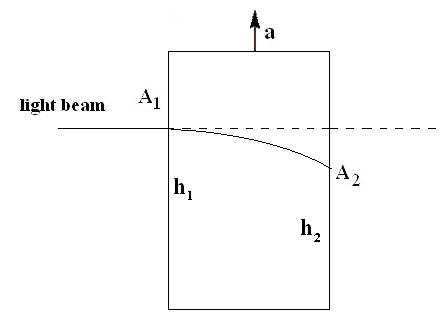

Electromagnetism in a gravity field for the quaternion gravity proposal
Gravity is king, effecting everything. In this blog, the details of gravity's effects on light will be detailed for both general relativity and the space-times-time invariance as gravity proposal. This analysis leads to an experiment to see which description of gravity is correct. Someday the data will decide.
Light is bent by gravity in both theory and practice. Einstein considered the path light would follow if viewed by an accelerating elevator. To such an observer, light appears to bend.

The equivalence principle of general relativity says that gravity is indistinguishable from the accelerating elevator except for tidal effects.
Newton's scalar theory of gravity also predicts light will bend to gravity. As a scalar field theory, it predicts one kind of bending, the g00 term.. General relativity has that same term plus the effects of the curvature of space of the same size, so the predicted change is twice as big for GR. In 1919, the first results came in supporting the predictions of general relativity in an experiment using photographic plates exposed during a total eclipse. It took the advent of radio telescopes to significantly increase our confidence in the experimental results because a rare total eclipse is not required for such studies. By measuring the change of radio sources as they approached the Sun, a more complete picture of light bending at different distances from the Sun was done. Radar has been reflected off of planets. General relativity has accurately predicted the time delay of those reflections.
A fun prediction was Einstein rings. Imagine a strong source of light very far away such as a pulsar. Over those billions of light years, there happens to be a galaxy right in the way. This would lead to gravitational lensing. Light from the quasar would bend around the lens galaxy, so the quasar's light would form a ring. Since the lens is an accident of the history and evolution of the Universe, the ring is not perfect. Yet one can build models that match the data. No doubt one could construct Newtonian rings, but that exercise is not done due to the success of general relativity.
The path of light through a gravitational field is the subject of all of the cited studies. But what about the electric and magnetic fields themselves? The math story is very clear: the electric field E and magnetic field B are unchanged by gravity. Mathematicians say one uses an exterior derivative to calculate these two fields using an antisymmetric, rank-2 tensor. Write out the definition of the electromagnetic field strength tensor using covariant derivatives:
There are a number of assumptions that go into this calculation. There are a great many choices one could make about the connection. I use the ones that are the basis of standard general relativity, that the connection is metric compatible and torsion-free. The Christoffel symbols of the second kind (Arfken subspecies) are symmetric for a change in the paired indexes. One says that the electromagnetic field strength tensor is "manifestly covariant".
Consider a box with a stable electric and magnetic field in it. Move that box anywhere you like in a gravitational field, even close to a black hole. The strength of the E and B field will not change. What will change is a measurement of the energy density of that field. The reasons is that the energy depends on the sum of squares of these two fields. The squaring operation requires the use a metric tensor which does vary as one moves around a gravitational field.
There is still a problem with claiming that neither field changes. We know that general relativity says that in a gravity field, the time portion of a measurement will get smaller while the space measurement gets bigger. Write out the definition:

The electric field E has two parts: a time operator acting on a spatial potential and a spatial operator acting on a temporal potential. If temporal things get smaller, that might balance out the increase in the spatial terms. The same cannot be said about the magnetic field B. A spatial operator acting on a spatial potential can only grow larger.
In general relativity, there is an additional requirement. All elements used must transform as tensors. It is this requirement that leads to a term that removes any change to the magnetic field B. The details of the math tool trumps physical interpretation. This is neither a good nor bad thing. In terms of logical consistency, it would be nonsense to say there magnetic field is the one thing that does not transform like a tensor since it is part of the second rank anti-symmetric field strength tensor.
This is the first time however that I can say I have an issue with general relativity that has to do with the physical logic. If time-like things get smaller, and space-like things get larger, than the magnetic field must get larger due to gravity.
What physical reason is there to expect an eletric field to behave differently from a magnetic field since both are part of the same electromagentic field? I think of the electric field as a measure of quantized electric charge. Say there were only three such charges in a volume. It would not matter where those three charges were in a gravity field, the electric field stays the same. The magenetic field would be those three charges in motion. It is motion that is always effected by gravity. Therefore magnetism, charges in motion, must be changed due to where it is in a gravitational field.
There is another way to see that the current situation with electromagnetism and general relativity is odd. Imagine a pair of identical boxes that have a certain electric and magnetic field inside of them. One box is closer to a gravitational source than the other. To figure out the metric tensor, one could send a photon from the lower box to the upper box and determine how much the photon was gravitationally redshifted. Thus one is using a photo to determine the gravitational field. A photon is an excitation of the eletromagnetic field. It seams odd to me that only the travelling photon can know about the change in the gravitational field and not the fields themselves.
Big Consequences to Being a Little Different
This blog has provided a few physical reasons to argue that while an electric field might not change in a gravity field, there is a way to justifying the magnetic field would change. However space changes in a gravity field, magnetism is only uses spatial terms. Magnetism is charge in motion, and motion is what is altered by gravity. It is not logically consistent to use photons to detail the strength of a gravity field but not be able to do the same with the electric and magnetic fields themselves.
The math machinery of exterior derivatives is clear, consistent, and well-studied. The curl is independent of the metric, so there is no way it can change due to changes in the metric tensor. One would need to abandon tensors. Yet one cannot abandon tensors because tensors cover everything, even real and complex numbers.
The real and complex numbers are tensors of rank 0. They have their own "private" rules for adding, subtracting, multiplying, and dividing. Those rules do not change in flat or curved space-time. They are effectively "on for the ride" when one decides coordinates, picks metrics and connections, and all that jazz.
In my work, I only use tensors of rank 0 for every step of the mathematical analysis of patterns of events in space-time. This makes the logic of operations universal no matter what kind of physics domain is in play: classical, relativistic, quantum or combinations of these.